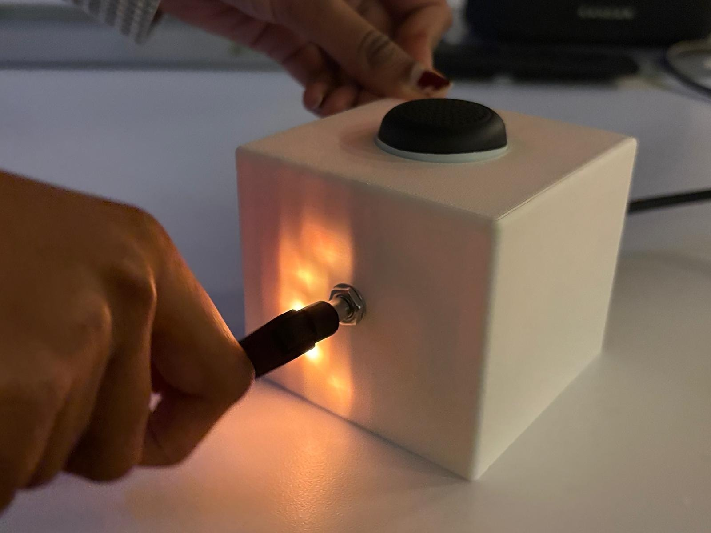
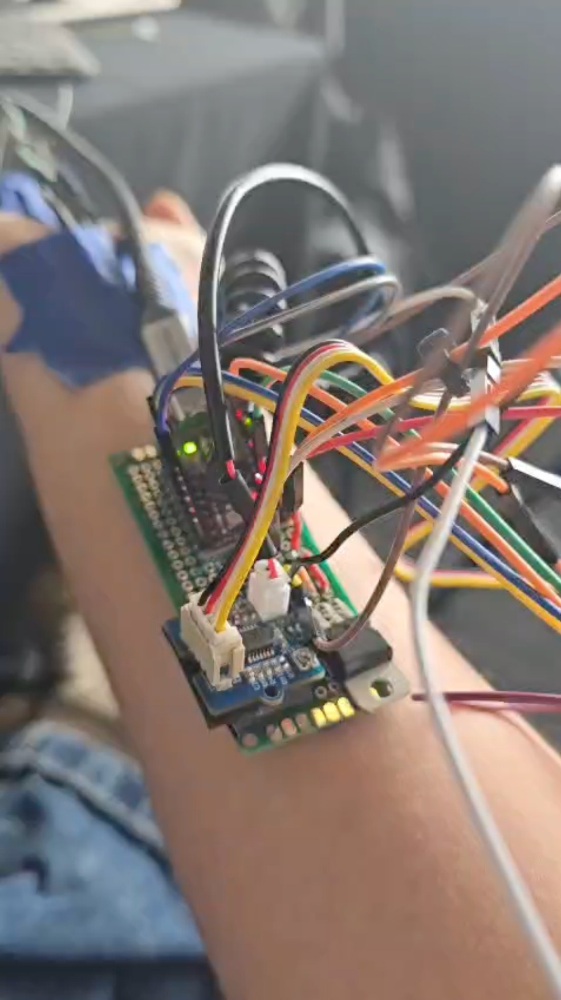
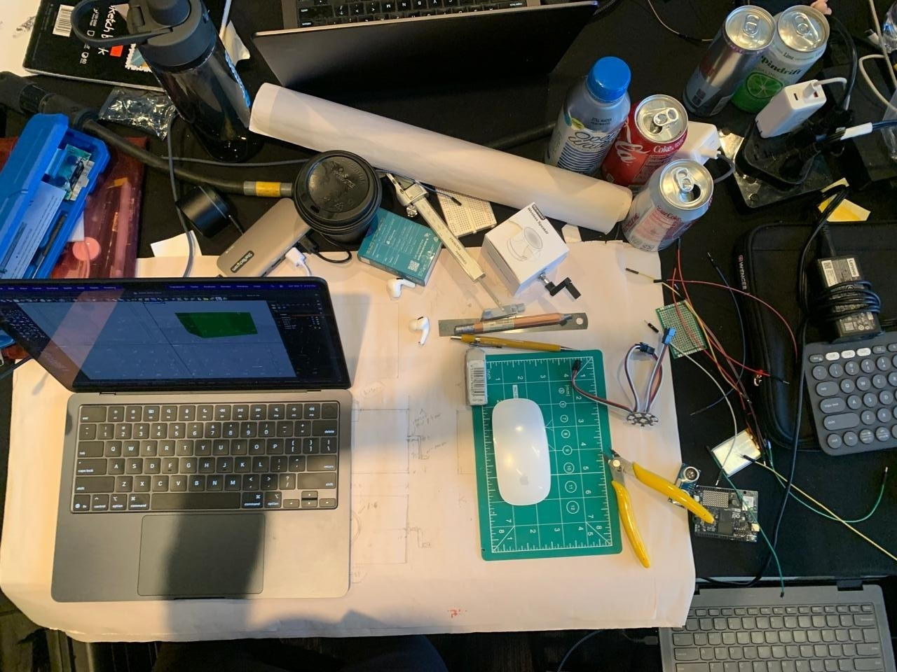
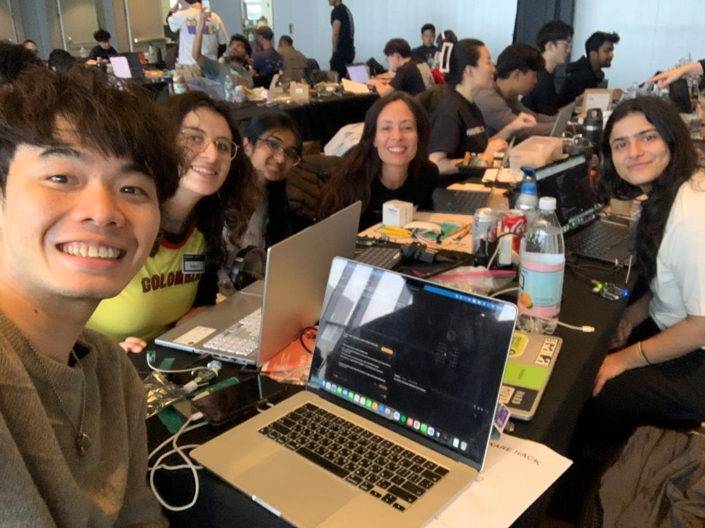

MEmento: hear what you carry
MEmento is a hand-cranked music box that turns two physiological signals, galvanic skin response and heart rate, into a short musical composition. You turn the handle and it plays, and when you stop turning it pauses. My team and I built it in forty-eight hours at the HARD MODE Hardware × AI Hackathon at the MIT Media Lab, and the question we kept asking was whether the data your body gives off could become something you sit down and listen to rather than another dashboard to check.

- My role
- What you owned on the team, e.g. physical form and the crank mechanism, sensing hardware, or the music mapping
- Timeline
- March 6–8, 2026 (48-hour hackathon)
- Context
- HARD MODE: Hardware × AI Hackathon, hosted by the MIT Media Lab
- Team
- Shreya K, Andrea Paola Gómez Jaime, Marina Kosovski, Harvie C, and me
- Methods
- Biosignal preprocessing and feature extraction, LSTM encoder–decoder representation learning, rule-based MIDI composition, 3D-printed physical prototyping
- Devpost
- Project submission ↗
- Tools
- Arduino, GSR and heart rate sensors, Python, Jupyter, MIDI generation and audio synthesis, PLA 3D printing
- Input and output
- Input: galvanic skin response (GSR) and heart rate (HR). Output: a roughly 30-second piece generated as MIDI and synthesized to audio.
What were we trying to find out?
Can a physical object turn someone’s heart rate and skin response into a short piece of music they’d actually want to listen to and think about, rather than another number to optimize? The hackathon brief asked for hardware and AI together, and we used it to try out whether personal data could be made for reflecting and connecting instead of for productivity.
Why this mattered
We’re surrounded by data and by systems designed to optimize us. Wearables and dashboards count steps, score sleep, and chart heart rate, but far fewer tools help us slow down, reflect, or connect with ourselves and with other people through that same data.
Galvanic skin response and heart rate are both linked to emotional arousal, which made them a natural pair for this, since they carry something about how a stretch of time felt and not just what the body was doing. MEmento takes those two signals and gives them back as a short piece of music you have to physically crank to hear. The tagline we landed on was “hear what you carry.”
How we approached it, and why
The build was an end-to-end pipeline, with biosignals coming in, features coming out, a learned representation of how each signal moved over time, and finally a composition engine that turns those representations into notes. We treated physiology as a sequence over time rather than a set of independent readings, which is why the sequence model sits at the center of the pipeline.
| Method | Why this method | What it gave us |
|---|---|---|
| Biosensing and preprocessing | Raw GSR and HR live on different scales and are noisy. Cleaning and normalizing both to a 0–1 range made them comparable, and a sliding window (20 samples) let small changes register without swamping the signal. | A sequence of 4D feature vectors over time (mean, standard deviation, slope, and peaks). |
| LSTM encoder–decoder | We wanted a representation of how each signal moved over time (stability versus variability) rather than a snapshot. Training the decoder to reconstruct the signal forced the encoder to learn a latent vector that actually meant something. | Two trained models, one per signal, and latent values we could use as musical control signals, with GSR shaping the melody and HR shaping the tempo and rhythm. |
| Rule-based MIDI composition | Physiology had to modulate the music without breaking it. Pitch steps stay within a C-major scale for smoothness while the body shapes pitch, velocity, and timing on top of that structure. | A roughly 30-second timeline of about 128 notes in phrases, with two instruments chosen automatically from the full MIDI set based on combined physiological state, written to MIDI tracks and synthesized to audio. |
| 3D-printed physical prototyping | We wanted one obvious thing to do with it, and almost everyone already knows what a hand crank does. You turn it to play and stop turning to pause. | A PLA-printed music box housing the electronics, speaker, and a hand-cranked mechanism. |
What we actually did
-
Sensing the body
Signal capture and cleaningWe wired GSR and heart rate sensors to an Arduino and read both signals from the wrist and fingers. The first thing we had to do wasn’t exactly exciting. We cleaned the two streams, normalized them so they could be compared, and synced them so that a small change in the body could shape the music without breaking it.
-
Learning the shape of a signal
Feature extraction and the LSTMA sliding window turned each stream into features (mean, standard deviation, slope, peaks). We then trained two LSTM encoder–decoders, one for GSR and one for heart rate, so each encoder compressed its feature sequence into a latent vector that captured the signal’s dynamics. Reconstruction error was the training signal, and the latent values became our musical controls.
-
Turning features into notes
Composition engineThe generator picks two instruments from the full MIDI set (0–127) based on the combined physiological state, then builds a timeline of phrases. GSR shapes the melody, and heart rate shapes how long each note lasts and how dense the rhythm is. Keeping pitch steps inside a C-major scale was the decision that made the output listenable rather than a noisy sonification.
-
Building the box
Physical formWe designed and printed a PLA enclosure with a speaker on top, a crank on the side, and a warm light inside, and connected the crank so that turning plays the piece and stopping pauses it. We kept the form plain on purpose. It’s a small object you hold and turn, and there’s nothing on it that looks like a dashboard.


What we learned
The translation layer mattered more than the sensors or the model
Preprocessing, feature design, and the musical mapping are what decide whether the output feels like you or just like data. We think the sensors and the model mattered less to the experience than the decisions we made in between them.
Physiology made more sense as a sequence than as single readings
LSTMs work best when a signal is handled as a sequence rather than as independent moments, and how stable or variable a signal was over a window told us more than any single reading did.
A fixed scale kept the variation from sounding like noise
Keeping pitch inside a scale while letting physiology change the velocity, timing, and density gave the music enough structure to sound intentional and enough variation to sound like it came from a person.
Our mapping is one of many
There are a lot of reasonable ways to translate bodily signals into musical ones, and ours produced inconsistent outputs at times. We’d need to ground the mapping in an actual musical framework before we could say it was more than a first guess.
What came out of it
By the end of the weekend we had a full working pipeline, from biosignals to features to LSTM latent representations to MIDI composition to audio, housed in a hand-cranked box with one obvious thing to do with it. The idea is that your own data could be something you think about and share with someone else rather than something you optimize. The full write-up, build list, and gallery are on our Devpost submission ↗.

What worked, what didn’t, what’s next
What worked
Committing early to one gesture, crank to play and stop to pause, kept the hardware small enough to finish in time and gave the object a clear identity. Building the pipeline end to end, even roughly, meant we could actually hear the result and tune the mapping by ear.
Limitations
We only had forty-eight hours, the sensors were only tested on ourselves, and the composition engine was tuned by listening to it rather than through any kind of study. The outputs weren’t always consistent, and we don’t have any evidence yet about whether people can tell the music came from them.
What I’d study next
The next step would be to connect it to data from wearables, build a richer composition engine with stronger mappings between the latent features and the musical structure, possibly drawing on Terry Riley’s phrase-based framework, refine the physical form and how you hold and turn it, and try out sharing, where people exchange their pieces of music with each other.